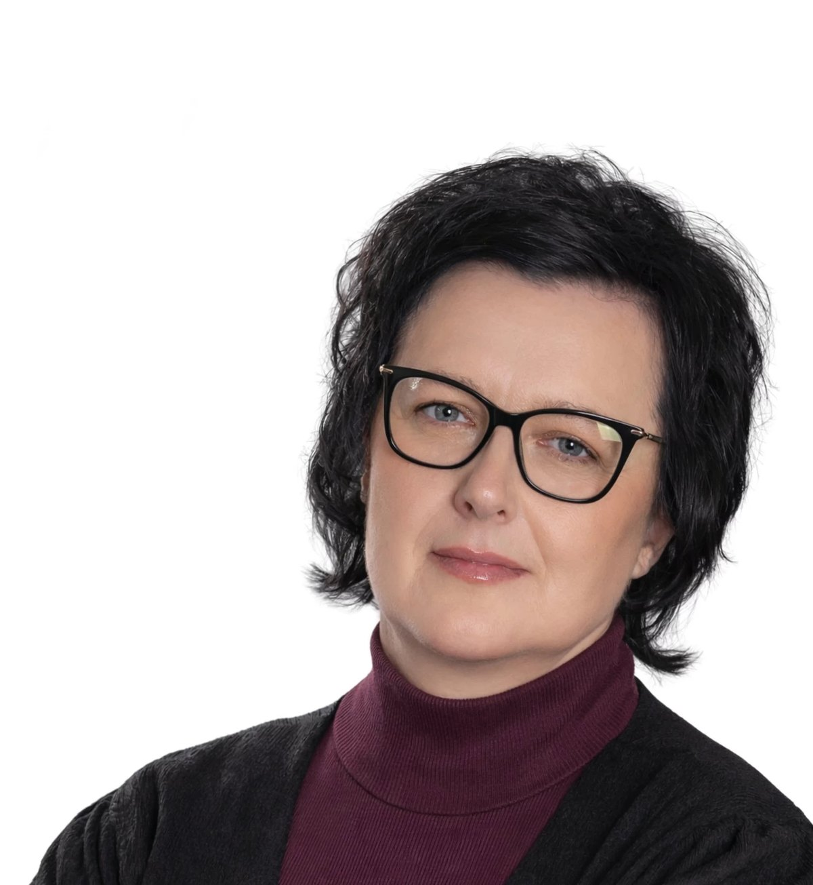

Vrtec in šola
Dovolj mest v vrtcu brez čakalne vrste in varne poti do šole — pločnik in osvetlitev tam, kjer ju danes ni.
Mengeš je dovolj majhen, da se poznamo, in dovolj velik, da lahko naredimo velike stvari. Za to ni treba obljubljati vsega — treba je izbrati pravo in to dokončati.

Priporočen portret: pokončen, 1200 × 1500 slikovnih pik, dnevna svetloba.
Redne ure za občane vsak teden, brez naročanja in brez posrednikov.
Vsak večji projekt z objavljeno ceno, rokom in odgovorno osebo.
Raje tri stvari do konca kot deset napol. Zaključeno se vidi, začeto ne.
»Ko sem pred leti prvič prišla na sejo občinskega sveta, sem mislila, da bom razumela vsaj polovico. Nisem razumela skoraj nič. To ni bila moja krivda in ni bila nujno njihova — tako pač je bilo napisano. Odtlej mi je jasno, kaj hočem spremeniti najprej: da občan brez pravnika razume, kaj se dogaja z njegovim denarjem.«
Urška Tavčar
Nič od tega ni nemogoče in nič od tega ni zastonj. Pri vsaki točki bo pred volitvami objavljena ocena stroška.
Dovolj mest v vrtcu brez čakalne vrste in varne poti do šole — pločnik in osvetlitev tam, kjer ju danes ni.
Umirjanje prometa skozi naselja, povezane kolesarske poti in parkirišča tam, kjer ljudje res parkirajo.
Več ur pomoči na domu, prevoz do zdravnika in prostor, kjer se je mogoče dobiti tudi pozimi.
Urejena igrišča, dostopna dvorana in razdelitev sredstev društvom po znanem, objavljenem ključu.
Drevesa tam, kjer je poleti prevroče, urejene sprehajalne poti in odvoz odpadkov, ki deluje tudi ob praznikih.
Proračun, razumljiv brez pravnika. Vsak zapisnik na spletu v treh dneh. Odgovor na vprašanje občana v enem tednu.
Rodila sem se v Mengšu in se po študiju vrnila nazaj, ker sem hotela otroke vzgajati tam, kjer sosed pozna soseda. Ta odločitev je bila premišljena in je nisem obžalovala.
Zadnjih dvanajst let vodim manjše ekipe — najprej v podjetju, zadnja leta tudi v društvu. Iz tega sem se naučila dvoje: da je vsak projekt najprej pogovor, in da obljuba brez roka ni obljuba, ampak želja.
Kandidiram, ker mislim, da lahko občina dela bolj razumljivo, bolj predvidljivo in bolj odzivno. Ne obljubljam, da bom vse rešila. Obljubljam, da boste ob vsakem vprašanju dobili odgovor — tudi kadar bo ta »ne, ker«.
Podatki bodo dopolnjeni, ko jih objavi občinska volilna komisija.
Vsako sporočilo preberem sama. Če je vprašanje, dobite odgovor — tudi če odgovor ne bo tak, kot bi si želeli.